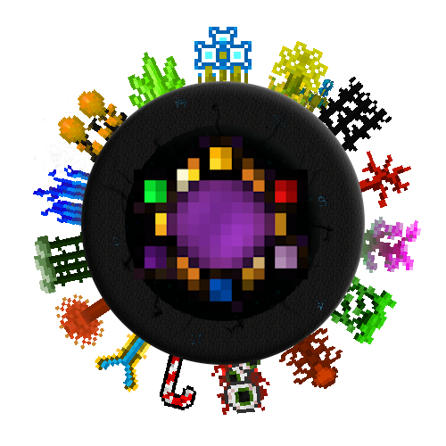
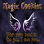
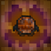
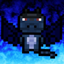
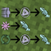

Unsupported Mods Fixes
Fixes for forge modsMods list:

AOA TC
Addon for Thaumcraft & AOA (Nevermine)
ExtraUtilities
Just a bunch of useful things
JourneyMap
Real-time mapping in-game or your browser as you explore

MagicCookies
A thaumcraft expansion mod that adds some extra features, golems and nether structures
NotEnoughItems
Recipe Viewer, Inventory Manager, Item Spawner, Cheats and more

Pumpkifiction
A small addon for Thaumcraft 4 containing the very single fun-made wand focus
ThaumicAdditions
Meet new neat and handy features to Thaumcraft
ThaumicMachina
Expand Thaumcraft in a more mechanical and theoeretical light
ThaumicRevelations
Good ol' TRv... Now with a new Dev!

ThaumicUpholstery
A thaumcraft addon that adds armor upgrades!
ThaumicBases
Thaumic bases is a Thaumcraft 4 addon, which adds a whole bunch of random additions...
Witchery
Witchcraft and nature magic with a bit of voodoo and necromancy too
Advent of Ascension (Nevermine)
A massive exploration and RPG mod with thousands of items, hundreds of mobs, 20+ bosses,...

Thaumcraft Research Helper
This Mods helps you complete Thaumcraft Research.